ENEM
do Arnaldo
Uma experiência para o futuro
Simulado • preparação • protagonismo • depoimentos
Mais que um simulado.
Uma preparação para escolhas reais.
O ENEM do Arnaldo aproximou os estudantes da dinâmica da prova oficial: tempo, concentração, redação, questões extensas e organização emocional.
Ao longo de dois dias, a escola criou uma experiência de preparação, permitindo que cada estudante identificasse seus desafios, reconhecesse seus avanços e chegasse mais confiante à prova oficial.
“Confie no caminho que você construiu. Seu futuro começa com a coragem de tentar.”
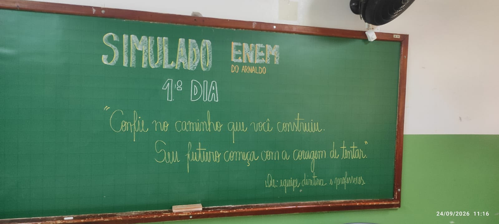
Objetivo do ENEM do Arnaldo
O ENEM do Arnaldo tem como objetivo proporcionar aos estudantes da 3ª série do Ensino Médio uma experiência próxima à realidade do Exame Nacional do Ensino Médio (ENEM), preparando-os tanto nos aspectos pedagógicos quanto emocionais para a realização da prova oficial.
Por meio do simulado, busca-se familiarizar os estudantes com o formato das questões, a redação, o tempo de duração, a organização do ambiente e os procedimentos de aplicação, além de desenvolver estratégias para administração do tempo, concentração e controle da ansiedade.
A iniciativa também possibilita que cada estudante avalie seus conhecimentos, identifique conteúdos que precisam ser retomados e adquira maior segurança e confiança, tornando a preparação para o ENEM mais significativa e próxima da experiência que encontrarão no exame oficial.
Dois dias vivendo o clima do ENEM
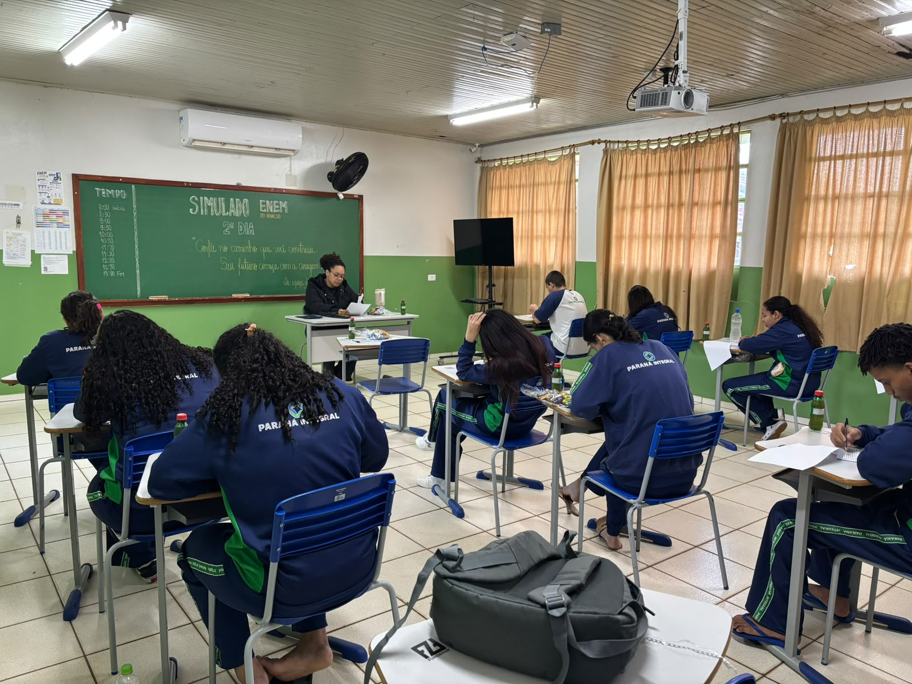
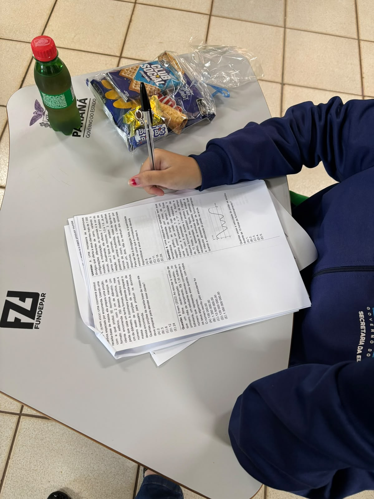
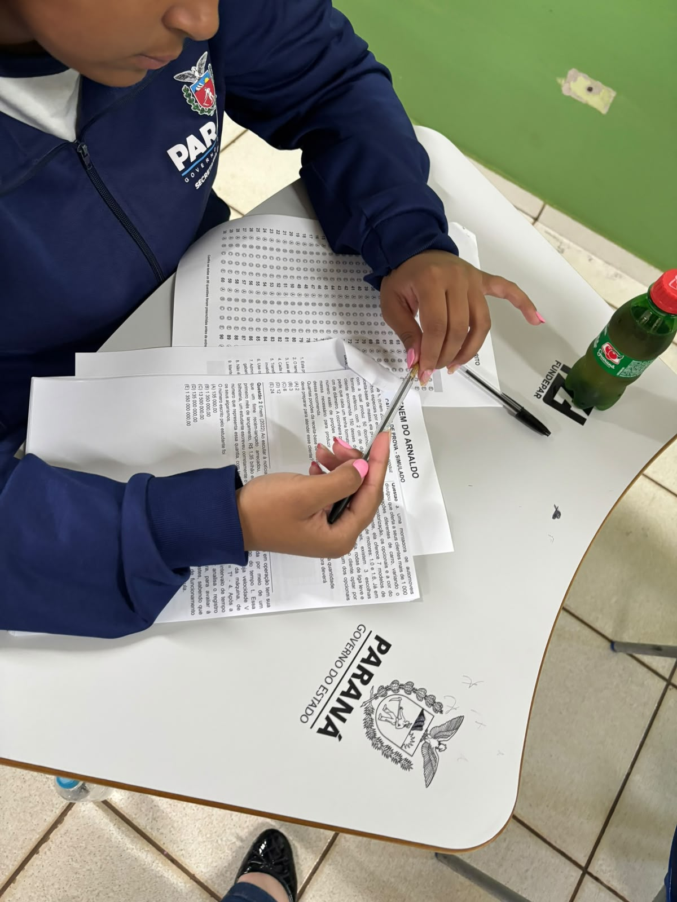
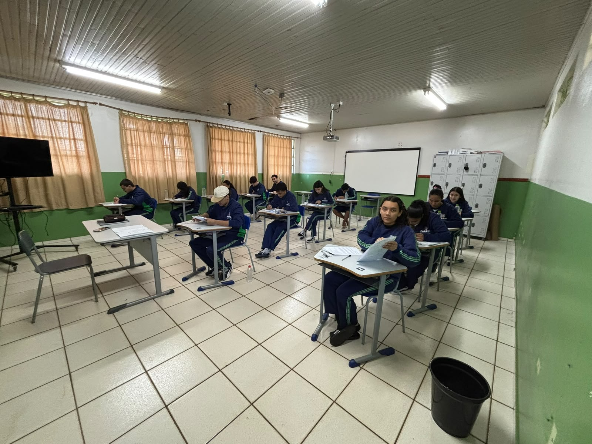
Redação + 90 questões
e
Prova de Ciências Humanas e suas Tecnologias
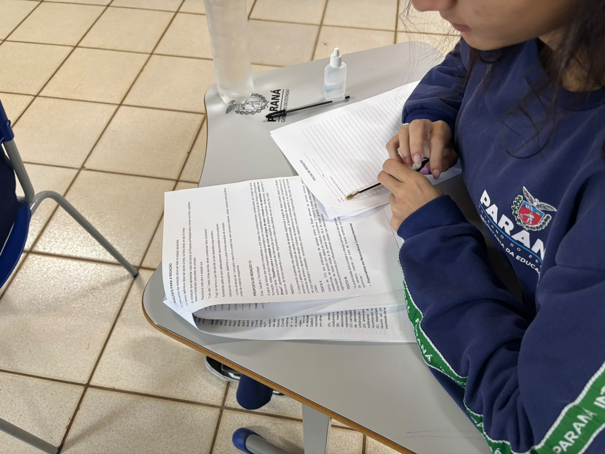
90 questões
e
Prova de Matemática e suas Tecnologias
Depoimentos dos estudantes
Depois de vivenciarem os dois dias do simulado, nossos estudantes compartilharam suas percepções, desafios, aprendizados e expectativas para o ENEM oficial.
Experiências que revelam preparação, confiança e protagonismo.
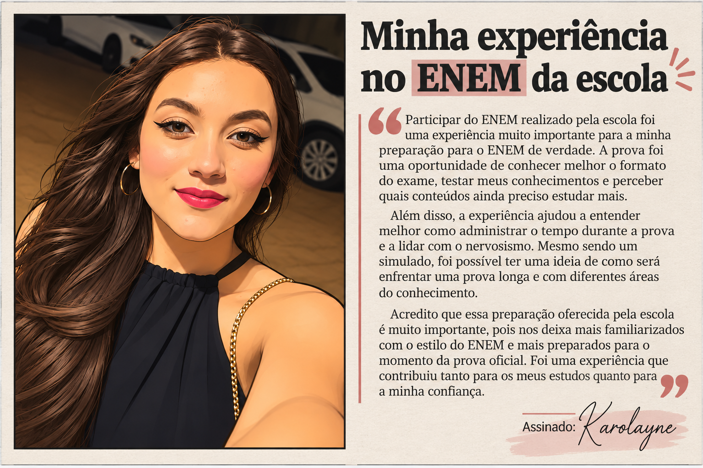
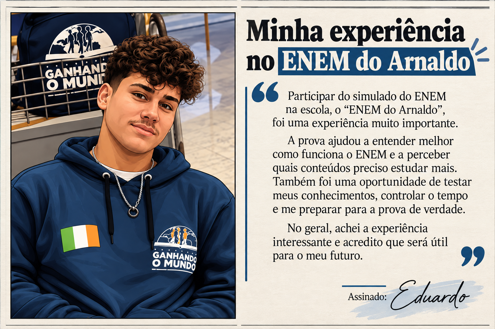
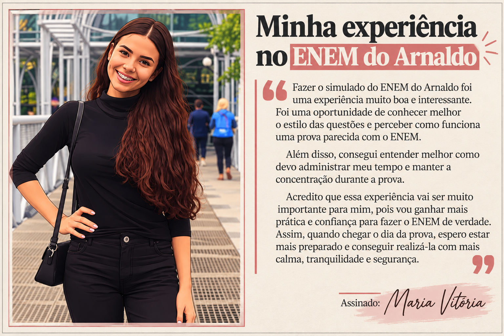
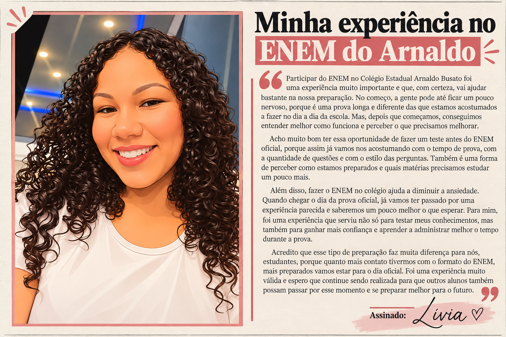
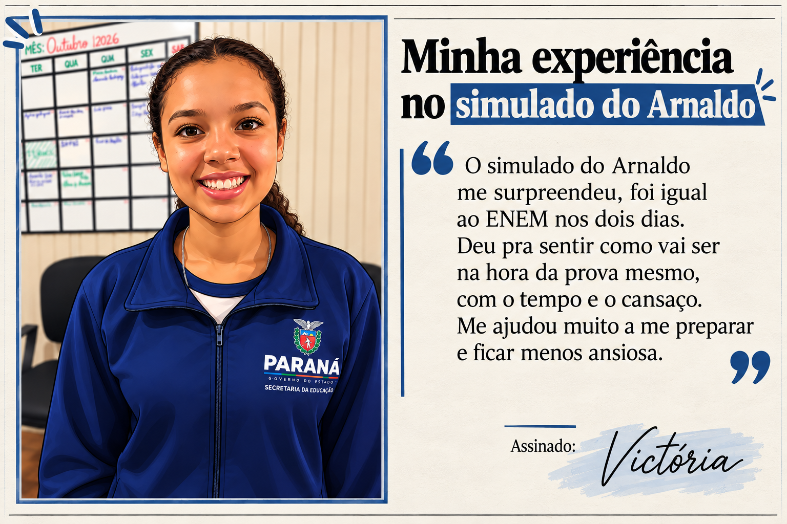
Depoimentos dos aplicadores
Os profissionais que acompanharam a aplicação também registraram suas impressões sobre a participação, o comprometimento e a preparação dos estudantes durante o ENEM do Arnaldo.
Um olhar de quem esteve presente em cada etapa dessa experiência.
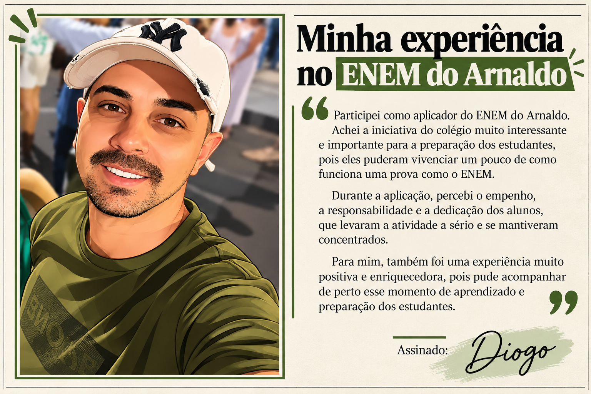
Uma experiência que termina.
Uma preparação que permanece.
O ENEM do Arnaldo foi mais do que a realização de um simulado. Durante dois dias, nossos estudantes vivenciaram desafios muito próximos aos do exame oficial, colocando em prática conhecimentos, estratégias, concentração, organização do tempo e controle emocional.
Cada questão resolvida, cada decisão tomada e cada dificuldade superada tornou-se parte de uma preparação construída com dedicação. Mais do que medir conhecimentos, essa experiência mostrou aos estudantes que confiança também se desenvolve quando existe oportunidade para tentar, aprender e avançar.
Encerramos esta edição com a certeza de que o caminho continua. Que a experiência vivida fortaleça cada estudante para o ENEM oficial e, principalmente, para as escolhas e conquistas que virão depois dele.
DO ARNALDO2026